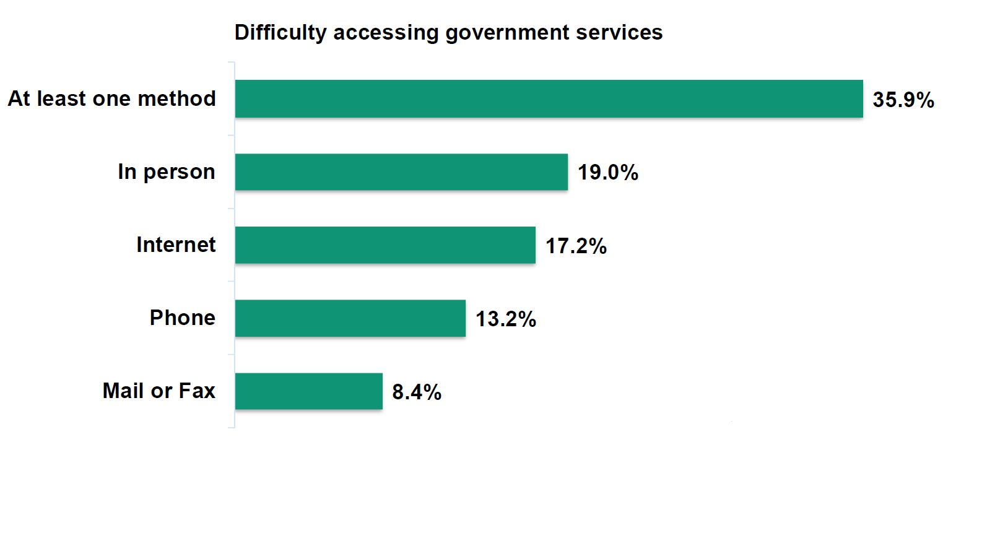

AccessAbility Playbook - Play 4 Design experiences to be more inclusive
- Introduction - Story behind the Playbook
- Play 1 - Learn about accessibility, it’s more than you think
- Play 2 - Understand how barriers affect persons with disabilities
- Play 3 - Involve persons with disabilities from the start
- Play 4 - Design experiences to be more inclusive
- Play 5 - Make communications accessible for everyone
- Play 6 - Develop the skills to provide accessible service
- Play 7 - Be part of an accessible culture
- Inspiring Tools
Play 4 Design experiences to be more inclusive
Inclusion Principal: Universal Design
Universal design is an approach to intentionally design and deliver programs and services without creating barriers. While it helps ensure inclusion of persons with disabilities, it is seen as good design practice that meets the needs of anyone who needs to access your programs and services.
Universal design is based on 7 principlesFootnote 1
- Equitable use. Offer the same service and information where possible and where this is not possible, ensure equivalent access. For example, someone who needs more time to process or remember information, make it so online application forms have no time limits to allow for breaks, a longer pause, or recovery at a later date with a save for later option.
- Flexibility in use. Provide clients with various options in how they would like to use the program or service. For example, establish different ways for clients to provide feedback, complaints, and suggestions across all of your channels such as an online form, in writing or over the phone using a relay service, if required.
- Simple and intuitive to use. Reduce complexity and ensure it is easy to accommodate the various literacy and language skills. For example, provide signage at every point of access and in alternative formats such as the use of wayfinder beacons, content in braille or large print to reduce anxiety and confusion.
- Perceptible information. Information is communicated effectively regardless of the client’s ability. For example, support media players that display captions and provide audio options with adjustable size and colour for someone that is deaf or has low vision.
- Tolerance for error. Encourages design to minimize hazards and poor outcomes or accidental or unintended actions. For example, display furniture to ensure that no object is obstructing and avoid people tripping or falling over chairs that are misplaced.
- Low physical effort. Design does not require undue effort and can be used efficiently. For example, conduct a daily accessibility assessment of your service area such as take notice of building or city renovations that are underway or test functionality of door openers.
- Size and space for approach and use. Provide enough space for people standing and seating while they are using an assistive device. For example, have multi-level service counters to accommodate wheelchairs or give the ability to someone with physical limitations to utilize as a supported piece of equipment.
Inclusive design is everyone’s responsibility. Don't be reluctant to connect with people such as subject matter experts, policy makers, designers and front-line staff.
Leave no one behind
Services are often designed and delivered in ways that create obstacles for persons needing the service. Clients often face multiple barriers and a single barrier can be enough to keep an individual from accessing service – even if a service is “technically accessible” by meeting existing standards… Always ask yourself if your client is actually able to access the service.
For example, if you only target “mainstream” clients, you will probably end up forgetting about the deaf community or the ones visually impaired and how they will become aware of your program. Think about how an individual with diminished memory will collect information about your program for when they need it.
Intersectionality
To be truly inclusive, you need to think of your clients as complete human beings. A person with disability is more than just their disability. Everyone has multiple characteristics that we need to keep in mind.
Intersectionality is about a diversity of characteristics for which society, or your organization has created barriers that prevent some individuals from accessing services. Find out what characteristics are likely to be seen among your clients.
Always work toward finding out who are the remaining individuals not accessing your service. For programs that include people in vulnerable situations, it is unlikely that it is random individuals willingly choosing to opt out – and a small percentage of a large program is still a lot of clients. It may be those most in need that are missing out on the program intended to help them.
Although this playbook is focused on people with disabilities, here are other client demographics that can be intersecting, creating unique considerations for your service delivery:
- Indigenous Peoples – In 2017, 32% of First Nations people living off reserve, 30% of Métis and 19% of Inuit had one or more disabilities that limited them in their daily activities.Footnote 2 This intersects with considerations specific to this community, such as: location, language, historical relationship with the government. Many remote, on-reserve communities do not have paved roads, easy internet access (satellite only, for example), fly-in only communities.
- Poverty – living in poverty implies the individual is in a more precarious situation meaning that service delivery problems can have more dramatic impacts on outcomes.
- Youth – mental health-related disabilities are the most prevalent type of disability: 8% of Canadians between age 15 and 24 years.Footnote 3
- Seniors – almost half (47%) of seniors over age 75 report have a disability. Dexterity, hearing and physical disabilities increase significantly with age. Footnote 3
- LGBTQ2+ – In addition to the challenges created by society at large, transgender persons may have increased need to deal with government while transitioning genders, which may coincide with temporary disabilities.
- Victims of violence – survivors of domestic violence have a significantly higher likelihood of brain-related injuries, such as concussions.
- People living in rural and remote locations.
- People who are incarcerated and/or previously incarcerated.
- Visible minority groups.
- Newcomers.
- Women – 24% of women are more likely to have a disability than men (20%).Footnote 3
Good decisions that create a positive experience
Inclusive design aims to remove the service barriers that affects your client's ability to obtain the services to which they are entitled.
When you develop services, each decision can limit the accessibility of the service. Few policy objectives start out inaccessible; they become less accessible as you make decisions about applications, reporting, interacting, etc.. Some of those decisions may be necessary, perhaps for integrity, but has every alternative really been considered?
After exploring all alternatives, the remaining barriers can be examined to determine how to get around them when they affect someone's ability to access the service. Service design needs to be proactive in finding solutions before the barrier affects a client.
Government uses multiple channels to deliver programs and services. These mainly include in-person, phone and online. No one channel is accessible for everyone hence alternative approaches are key to inclusion.
Curb cut effect
While accessibility focuses on key considerations for persons with disabilities, inclusive design considers from the start, how something might be easy and useful for as many people as possible. One example is the curb cut effect – a term used to describe what happens when an accessibility feature benefits more people than the group it was originally intended for, such as a ramp or path for wheelchair users. This also benefit parents pushing strollers, users of walking aids or people carrying heavy packages.
Everyone is unique
Experiences of disability vary. Some disabilities are considered mild, and some more severe. Some are progressive, some fluctuate, and some are stable. Some individuals are born with a disability, and many develop them later in life. 71% of persons with disabilities have more than one type of disability, and so may experience a variety of disability experiences. All individuals with disabilities need to have access to services.
It’s about the person
What a client could or could not do last time is not what they can do this time. Approximately 60% of persons with disabilities have conditions that are changing over time (progressive, recurrent, fluctuating). Clients need to be able to decide how they want to access services, every time.
As a service provider, service design should not assume that a family member or personal care giver will perform tasks on behalf of someone living with a type of disability or functional limitations. Their personal information deserves privacy. Persons with disabilities are like everyone else, they have the right to access information and services themselves.
Accessibility requires more than one service channel
One third of persons with disabilities have difficulties accessing at least one service channel.
- 35.9% of persons with disabilities have difficulties accessing at least one method of government services.
- 19% of persons with disabilities have difficulties accessing government services in person.
- 17.2% of persons with disabilities have difficulties accessing government services by internet.
- 13.2% of persons with disabilities have difficulties accessing government services by phone.
- 8.4% of persons with disabilities have difficulties accessing government services by mail or fax.
An accessible in-person experience
Consider these features:
Service Design
- Parking is close to the building, ramps and elevators have hand railings, and doors have automatic openers;
- Accessible transit services to building;
- Accessible pathway from arrival point to accessible entrance;
- Area clear of obstacles, has textured ramps, tactile flooring, and Braille on door & wayfinding signs;
- Colour contrast and luminance in environments (e.g., handrails on stairs or ramps should contrast from the background wall, door frames and door hardware);
- Fire alarm has visual cues;
- Lowered doorknobs and wall-mounted controls (e.g. light switches);
- Adjustable counter height is available with a chair for client to sit comfortably before and during the interaction.
Assistive Technology
- Available on-screen keyboard with trackball, joysticks, or other pointing devices;
- A signature card and accessible payment machine are available;
- Wayfinding beacons, quick response (QR) codes for navigation assistance;
- Telephones with large numbers and higher volume levels;
- Audible notification via queuing system;
- Visual announcement (Digital Displays) present information sign languages;
- Desktop counter loop to enhance voice through client hearing aids;
- Immediate access to sign language through Video Remote Interpretation (VRI).
Training & Culture
- Trained greeter (concierge) welcomes client, identifies needs and for example, escort client to a priority area and offers to use a private room should the noise be too much of a distraction;
- Agent does not touch or address service animal;
- Agent knows to use plain language and speaks to client in short sentences, with confident, reassurance, and listens carefully;
- Agent gives extra time for client to explain the situation and ensures the service request is clearly understood;
- Agent faces client and speaks directly to client at all times;
- Agent speaks directly to client, even if they brought someone to interpret or assist.
11% of Canadians with a disability prefer in-person visits.
An accessible phone experience
Consider these features:
Service Design
- IVR option to press “0 to skip the option tree and reach an live person;
- Agent is able to complete tasks for the client, such as helping client to fill out the form and sends it by mail or email, ready to sign, at the conclusion of the call;
- Agent able to send relevant information by email, or appropriate format, for client's future reference;
- Agents are equipped and located to minimize background noises.
Assistive Technology
- TTY (Teletypewriter) phone number answered with same frequency and service standards as all other calls;
- Accept calls made via Video Relay Service and Relay Services (via TTY);
- Service agents are aware of the range of interpreters they may interact with the alignment with privacy and third party representatives policies.
Training & Culture
- Agent knows to use plain language and speaks to client in short sentences;
- Agent is trained to ask simple questions without client feeling overwhelmed;
- Agent is trained to ask simple questions without client feeling “corrected” if details are forgotten or mixed up and ensure any quirks, odd behaviour or escalated behaviour are handled appropriately and with the utmost sensitivity;
- Agent is trained to recognize behaviors related to a disability (e.g. slurred speech does not mean a client is intoxicated).
32% of Canadians with a disability prefer using the phone channel.
An accessible online experience
Consider these features:
Service Design
- All government websites are required to meet international standards for accessibility. The GC Standard is WCAG 2.0 and the 2.1 standard has been introduced to include improvements for mobile devices;
- Nothing on the website flashes rapidly, links and drop-down menu have self-explanatory titles, plain language text is used, and icons are highly visible;
- Embedded hyperlinks in a string of text rather than using the URL as the link text;
- Embedded videos available in ASL/LSQ sign language and have high-quality foreground audio that blocks background noise;
- Supplement text with images, graphs, and other illustrations;
- Personalized Chat greeter helps client find the information very quickly;
- Live Chat Agent helps client fill out a form or answer any specific questions and can authorize digital signature;
- Industry standards, such as WCAG, are the minimum requirements and doesn’t ensure that 100% of persons with disabilities will be able to use it. Being inclusive means going beyond the minimum standards;
- Web accessibility includes plain language and both WCAG and GC policy seeks text at the grade 6-8 level of literacy. There are tools that measure the complexity of text.
Assistive Technology
- Live Chat Agent is authorized to help client fill out application form using a screen reader that communicates onto client’s computer speakers (JAWS);
- Artificial Intelligence such as voice-based technology and Chatbots is offered to answer real-time frequently asked questions;
- Offer touch and adjustable screens with “read to me” options;
- Web search engines optimization.
Training & Culture
- Agent is trained to ask simple questions without client feeling judged or criticized;
- Agent knows to use plain language and speaks to the client in short sentences;
- Designing accessible services is recognized as a distinct skill and lessons from previous services are carried forward as the starting point for the next.
35% of Canadians with a disability prefer using the online channel.
Don’t force clients that are using screen readers to listen to long text such as privacy statements when other clients can scroll past it.
Respond to client needs during a Pandemic
The COVID-19 Pandemic has significantly changed the world we live in. It has also presented substantial challenges for persons with disabilities in the way they access services. During these times, the Government must ensure that Canadians with disabilities maintain their health, safety and dignity.
Recognize barriers
In-Person
- Plexiglas partitions present communications barriers for clients and staff, particularly those with hearing impairments or those using a wheelchair;
- The increased use of tensile posts or stanchions may also present a barrier for clients with sight loss if these stanchions are not cane detectable, and may be a tripping hazard if not properly affixed;
- “Stand here” markers are challenging for clients with visual impairments and guide dogs have not been trained to social distance;
- A range of disability types result in more touching of the built environment (e.g., sight, balance, mobility), regular cleaning is crucial to protect their health;
- Enhanced cleaning procedures may cause health issues for those with chemical sensitivities.
Phone
- Closures or reduced hours in in-person offices may prevent some clients for receiving the services they need if they are forced to another channel.
Online
- Build in accessibility from the start when developing new services online to reach as many clients as possible;
- Include content in ASL/LSQ videos when possible.
Create positive outcomes
Service Design
- Provide services in multiple channels;
- Consider designating specific times for priority service hours;
- If queues form outside your service centre, ensure the line is supervised and provide easy to wipe seating or queue place holders for those who cannot stand for long periods of time;
- Many persons rely on facial expressions and lip reading to understand communications. Masks can create a barrier for these individuals;
- Provide appointments for clients who have specific accessibility requirements;
- Allow representatives to act on behalf of the client.
Assistive Technology
- Provide video remote interpreting services for clients who communicate via sign languages;
- Provide counterloops to assist those who use hearing aids.
Training & Culture
- Ensure staff is aware that not everyone can follow social-distancing norms. If staff are required to assist, provide PPE to do so safely;
- Communicate changes to your environment to ensure your clients know what to expect.
Tips
- Understand the barriers and consider people’s needs from the beginning;
- Be flexible;
- Keep documents and messages simple and easy to understand;
- Ensure new signage is at universal eye-level;
- Welcome feedback to adjust your new way of working quickly and effectively.